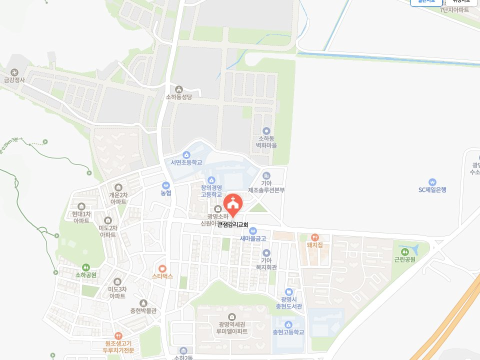

기독교대한감리회
KEUNSAEM METHODIST CHURCH
“한반도에 은혜의 강물이 흐르게 하라!”
성경 · 예배 · 선교 · 삶
예배
“성경공부하고 싶으신 분은 누구나 신청하세요^^”
교재: 어! 성경이 읽어지네
모이는 시간 — 주일 오후 1시 (점심 식사 후)

교회 소개
저희 교회를 소개해드립니다.
“큰샘감리교회”
말씀과 기도로 세워진 이 공동체는 예수 그리스도의 사랑을 삶으로 실천하며, 지역사회와 열방을 섬기고자 세워졌습니다.
우리는 성경 중심의 제자훈련과 깊이 있는 말씀 연구를 통해, 성도 한 사람 한 사람이 하나님의 말씀 위에 굳건히 서도록 돕고 있습니다. 말씀 안에 뿌리내린 한 사람이 변화될 때, 가정과 교회, 세상 가운데 하나님의 나라가 확장된다고 믿기 때문입니다.
큰샘교회는 단순한 예배의 공간을 넘어, 삶의 모든 자리에서 복음을 살아내는 ‘살아있는 교회’가 되기를 소망합니다. 가정과 일터, 선교지에서 하나님의 뜻을 이루어가는 이 거룩한 여정에 여러분을 초대합니다.
목회 철학
성경의 무오함을 믿습니다. 성경을 가르치고, 성경을 가르치는 사람을 세우는 교회입니다.
예배에 목숨을 거는 교회입니다. 예배를 통해 하나님을 만나고, 하나님의 음성을 듣고, 순종합니다.
주님의 지상명령인 선교에 동참하여 하나님의 나라를 확장하는 교회입니다.
성경적 세계관으로 삶이 변화되는 교회입니다.
사진
사진을 누르시면 크게 보실 수 있습니다.
담임목사
저희교회 담임목사님을 소개해드립니다.
“말씀과 삶이 일치하는 목회자”
담임목사 서동우
오시는 길
저희교회를 찾아오시는 길을 안내해드립니다
네비게이션에 ‘창의경영고등학교’ 검색
학교내에 주차가 가능합니다. 주차하시고 교문으로 바로 내려오시면 큰샘교회가 보입니다.
1호선 석수역 1번출구 나오셔서 1번 마을버스타시고 ‘창의경영고등학교’하차하시면 됩니다.
